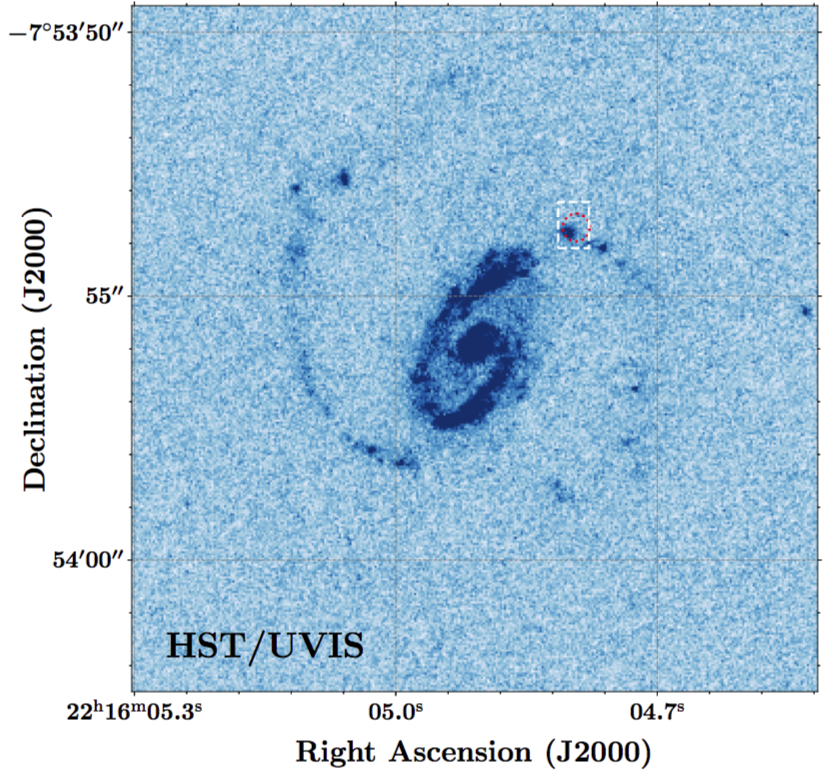

FRB 190608
Image from Chittidi et al., 2020 (arXiv: 2005.13158)
Summary
- Detected by: ASKAP-ICS
- FRB coordinates (RA, Dec): 22:16:04.77 -07:53:53.6 (J2000)
- Host coordinates (RA, Dec): 22:16:04.90 -07:53:55.8 (J2000)
- Redshift: 0.1178
- Observed DM: 340.05 pc cm-3
- Repeating: No
- References: Macquart et al., 2020, Nature, 581, 391;
Bhandari et al., 2020, ApJL, 895, 37;
Chittidi et al., 2020 (arXiv: 2005.13158);
Simha et al., 2020 (arXiv: 2005.13157);
Day et al., 2020, MNRAS, 497, 3335
Host galaxy properties
| Quantity | Measured value | Unit |
|---|---|---|
| Stellar mass | (1.16 ± 0.28) × 1010 | M⊙ |
| Star-formation rate | 0.69 ± 0.21 | M⊙/yr |
| Metallicity | 8.85 ± 0.02 | 12+log(O/H) |
| E(B-V) | 0.12 ± 0.01 | mag |
| Mass-weighted age | 383.4 | Myr |
| Absolute r-band mag. | -21.22 ± 0.05 | mag |
| u - r color (rest-frame) | 1.40 ± 0.09 | mag |
| Half-light radius | 2.84 ± 0.23 | kpc |
| FRB offset from galaxy center | 6.60 ± 0.57 | kpc |
Emission line fluxes
| Emission line | Measured value |
|---|---|
| Hα | 27.7 ± 0.4 |
| Hβ | 8.37 ± 0.33 |
| Hγ | 3.92 ± 0.34 |
| [OII] λ 3726 | 12.1 ± 0.7 |
| [OII] λ 3729 | 19.4 ± 0.8 |
| [OIII] λ 5007 | 15.0 ± 0.4 |
| [NII] λ 6584 | 18.3 ± 0.4 |
Photometry
| Telescope | Filter (eff. wavelength) | Magnitude (AB) |
|---|---|---|
| SDSS | u (355 nm) | 18.99 ± 0.09 |
| SDSS | g (469 nm) | 18.02 ± 0.02 |
| SDSS | r (617 nm) | 17.55 ± 0.01 |
| SDSS | i (748 nm) | 17.22 ± 0.02 |
| SDSS | z (893 nm) | 17.09 ± 0.05 |
| WISE | W1 (3.4 μm) | 14.37 ± 0.03 |
| WISE | W2 (4.6 μm) | 13.83 ± 0.04 |
| WISE | W3 (12.1 μm) | 10.76 ± 0.12 |
| WISE | W4 (22.2 μm) | 8.65 ± 0.42 |